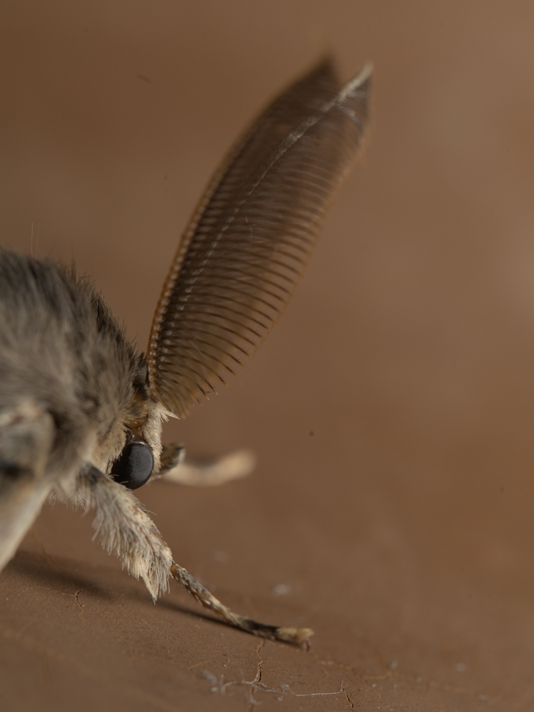

Nikon D500 · Laowa 100mm Macro @ 100mm · f/8 · 1/200 s · ISO 400 · August 2026 · Poland
A Lymantria dispar dispar showing off his impressive antennae. Only the males carry the sizeable, comb-like extensions, which they use to locate females by their pheromones.